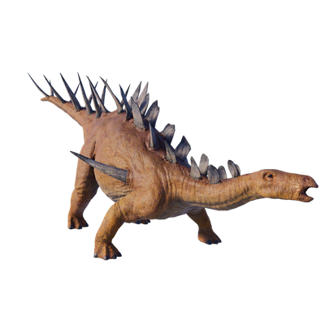

Useful Website
The stegosaurian Kentrosaurus is an herbivorous dinosaur that can grow up to 4m in length and weigh over 700kg. Like many other stegosaurian dinosaurs, Kentrosaurus is well protected from predators, with armour plates that run the length of its back and a pair of spikes that jut out from its shoulders. It also has a long, spiked tail that helps it to fend off attackers.
